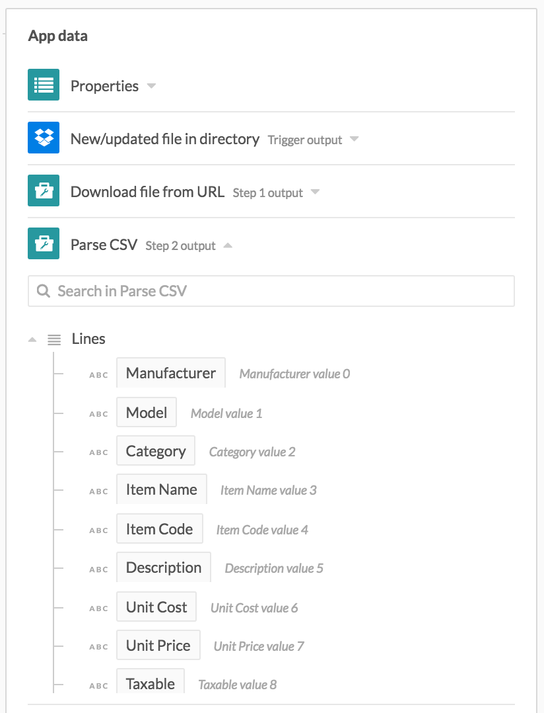

Handling CSV files
Workato is able to parse CSV files' content as variables to be used in Workato recipes.
Example CSV file setup
The following sample CSV file will be used as the example file.
Manufacturer, Model, Category, Item Name, Item Code, Description, Unit Cost, Unit Price, Taxable, Tax, Custom Field 1, Custom Field 2, Custom Field 3
Sierra Gardening, MS-321, Gardening supplies, Pine wood potting bench, MS-321, Oakwood potting bench, 74.50, 119.99, Yes, 0.0875, Pine, White, 30 inches
Sierra Gardening, MS-322, Gardening supplies, Cherry wood potting bench, MS-322, Oakwood potting bench, 74.50, 119.99, Yes, 0.0875, Cherry, Natural, 30 inches
Sierra Gardening, MS-323, Gardening supplies, Cedar wood potting bench, MS-323, Oakwood potting bench, 74.50, 119.99, Yes, 0.0875, Cedar, Black, 30 inches
Parsing CSV files via connectors' in-built CSV parsing capability
Certain connectors are able to process CSV files in particular and move individual values from these CSV files into other apps, for example, from the above CSV file:
Sierra Gardening
MS-323
Cherry
Natural
This is as opposed to simply moving entire files between apps. An example of such a connector is the Box connector. With such connectors, you can simply listen to new CSV files and parse them via the same Workato trigger to move the data into another app.
Parsing CSV files via connectors' in-built CSV parsing capability - example
In the following recipe, the Box trigger New CSV file will be used to read the sample CSV file from a Box folder and parse it to Workato as a list of three CSV lines. To try it out, create a CSV file with the above CSV sample and upload into a specific Box folder for the New CSV file trigger to pick up.
Note - even if you have CSV files with other schema and different header lines in the selected folder and sub-folders, the New CSV file trigger will pick up those CSV files as well and attempt to process them with the header specified. This may lead to job errors or bad data being moved into your app. Ensure that you're only picking up the files you want by keeping all the relevant CSV files in the monitored folder, or by adding a trigger filter to filter only files to pick up.
The following recipe parses new CSV files in Box and uses the data parsed to create new NetSuite inventory items.

Recipe that parses CSV files to retrieve data for use in datatree Example recipe
When using Box new CSV file trigger, the expected columns in CSV files has to be declared for Workato to know how the data is structured. From this declaration, Workato will build the trigger output datatree for use in subsequent actions.

Defining the expected columns in the CSV files that the recipe will pick up Example recipe
The columns defined in the Box new CSV file trigger shows up as usable variables in the output datatree. These variables can be used to map into subsequent recipe steps.

Using the variables created from the columns definition Example recipe
Parsing CSV files via Utility connector's CSV parsing capability
Not all connectors are able to process CSV files in particular and move individual values from these CSV files into other apps. Such connectors will have triggers that process only files in general. In such cases, we can still try to read the text content of CSV files and parse them explicitly with the Utility connector. This will allow us to move individual values from these CSV files into other apps, for example, from the sample CSV file:
Sierra Gardening
MS-323
Cherry
Natural
Parsing CSV files via Utility connector's CSV parsing capability - example
In the following recipe, Dropbox files triggered upon are not being parsed in the trigger, hence the additional need to download the content of the file and parse the CSV content for Workato to use. Parsing the CSV lines provides us with a list of lines (with each line having their own set of inventory item values) to utlize, hence we use a Repeat step to iterate through the list of lines and to create an inventory item with each set of values.

In the Parse CSV action, provide the file content to the CSV body input field, and specify the header line.

Field mapping for the Parse CSV action
The header line specified tells Workato how your CSV file's data looks. In this case, we can parse the following line into the proper variables datapill, such that "Sierra Gardening" corresponds to "Manufacturer", "MS-322" corresponds to "Model", etc.
Sierra Gardening, MS-322, Gardening supplies, Cherry wood potting bench, MS-322, Oakwood potting bench, 74.50, 119.99, Yes, 0.0875, Cherry, Natural, 30 inches
The Parse CSV action's datatree returns a list of CSV lines.

Output datatree for Parse CSV action showing the variables defined in the header line
In order to iterate through this list of CSV lines, we have to use a Repeat step. The following shows the mapping from the Repeat step's foreach datatree to the input fields of the Create Netsuite inventory item action.

Mapping of datapills from the Repeat step datatree to the action